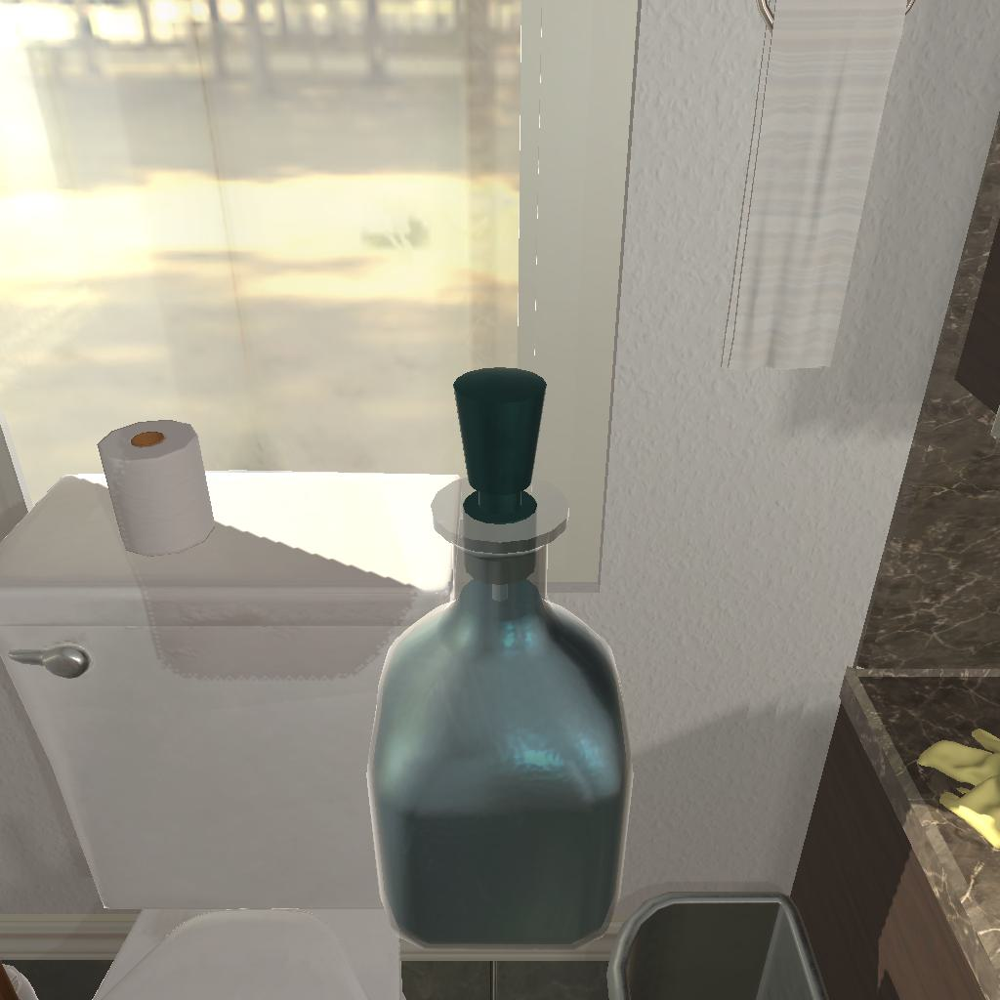
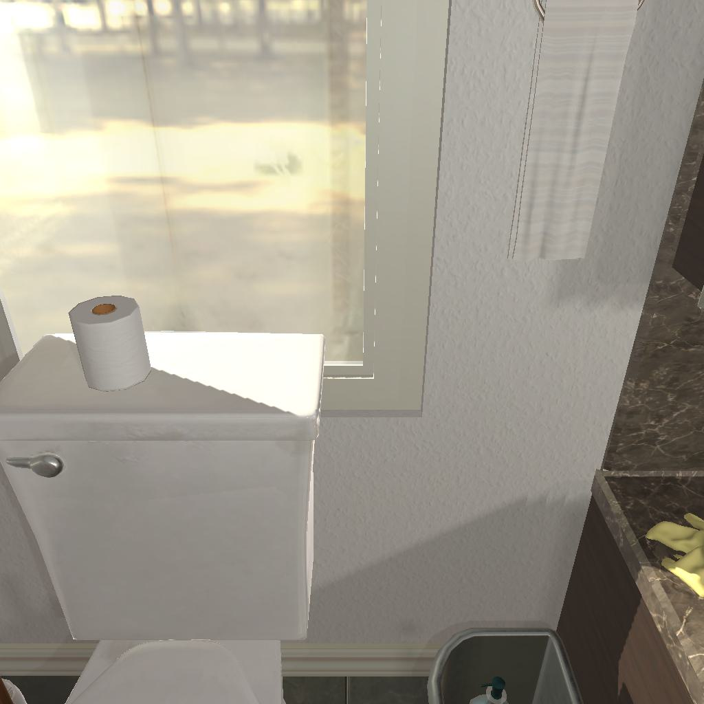

---------------------------------------------------------task: 27---------------------------------------------------------
--------------------------------------------------------------------------------------------------------------------------------------------------------------------
--------------------------------------------------------------------------------------------------------------------------------------------------------------------
Step:--------------------------------------------------------------------------3-------------------------------------------------------------------------------
----------------------------------------
VLM Prompt:
Image1:
Image2:
**Instruction**
1. Analyze the provided images to identify all visible household objects and compare the difference between images (e.h. whether the object is opened or not and taken on hand or not), focusing on those relevant to the task description "find two soapbottle and put them in garbagecan."
2. Use the analysis of images and the task hint "The agent must find an object of the desired type, pick it up, find the correct location to place it, put it down there, then look for another object of the desired type, pick it up, return to previous location, and put it down there with the other object." to answer the question: what is the most reasonable action in the choices for the task description "find two soapbottle and put them in garbagecan"?
3. Decide and write the answer using the template: The answer is: (i): , where i is the real number. If there is no desired object in images, search every place based on **Initial Observation** to find the object. And if no one is exactly correct, choose a similar answer.
**Initial Observation**
You are in the middle of a room. Looking quickly around you, you can see countertop (1), sinkbasin (1-2), sink (1-2), garbagecan (1), drawer (1-2), toilet (1), handtowelholder (1)
**Answer Choices**
(1): go to countertop 1
(2): go to sinkbasin 1
(3): go to sink 1
(4): go to drawer 1
(5): go to drawer 2
(6): go to sink 2
(7): go to sinkbasin 2
(8): go to toilet 1
(9): go to handtowelholder 1
(10): take handtowel 1 from garbagecan 1
(11): take soapbottle 1 from garbagecan 1
(12): take toiletpaper 1 from garbagecan 1
(13): take cloth 1 from garbagecan 1
(14): take scrubbrush 1 from garbagecan 1
(15): take plunger 1 from garbagecan 1
(16): examine garbagecan 1
**Answer**
Let's think step by step by following the instructions.
----------------------------------------
----------------------------------------
Original Response:
Upon analyzing the images, we can see that in Image 1 there is a soapbottle on the countertop next to the garbagecan. In Image 2, the soapbottle is no longer there, indicating that it has been moved or taken.
Given the task description "find two soapbottle and put them in garbagecan," we can infer that one soapbottle has already been put in the garbagecan, as it is missing from the countertop in Image 2.
Based on the task hint, the agent must now find another soapbottle. Since there is no other soapbottle visible in the images, the agent needs to search other locations mentioned in the Initial Observation.
Therefore, the most reasonable action from the choices provided would be to search places where soapbottles are likely to be found, such as the countertop, sinkbasin, or drawers.
The answer is: (1): go to countertop 1. This would be the first logical location to check for another soapbottle before moving on to other areas if needed.
----------------------------------------
----------------------------------------
>>> Refine Original VLM Response and Get Pure Action: go to countertop 1
----------------------------------------
-----------------------------------------------------------------
Running time: 13.216012239456177 seconds
Total Money: 13.892009999999999
-----------------------------------------------------------------
-----------------------------------------------------------------
Text Observation:You arrive at loc 0. On the countertop 1, you see a faucet 1, a cloth 1, a soapbar 1, and a soapbottle 2.
-----------------------------------------------------------------
UNSUCCEED